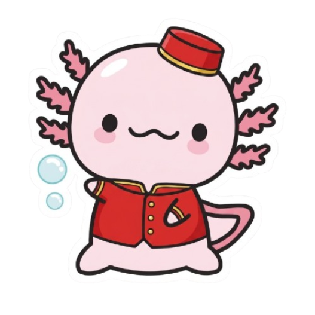

La industria de Hoteles y Restaurantes se basa en la excelencia del servicio y la higiene rigurosa. Los pilares fundamentales son:
Ejemplo práctico: Cómo atender a un comensal desde que llega hasta que come.
[PROTOCOLO DE SALA - TAREA TUVCH]
1. Recepción: Saludar ("Buenas tardes"), confirmar reserva y guiar a la mesa.
2. Toma de Comanda:
- Entregar la carta (menú) por la derecha del comensal.
- Anotar bebidas y platillos repitiendo para confirmar.
3. Marchar Platos: Avisar a cocina (cantar la comanda) para que empiecen a preparar los platos calientes.
4. Servicio:
- Servir los platos y bebidas por el lado DERECHO del cliente.
- Retirar los platos sucios por el lado IZQUIERDO.
5. Seguimiento: Preguntar discretamente: "¿Todo está a su gusto?"Nota: En tu aplicación TaskTUVCH, los meseros pueden usar la app para registrar la "Comanda" y enviarla digitalmente a la pantalla de la cocina al instante.
Responde estas preguntas basándote en los Fundamentos.
Asocia el concepto gastronómico/hotelero con su definición.
Demuestra tu dominio para obtener la excelencia en el servicio.
Felicidades por completar este tema, ahora tiene una buena idea de lo que es HyR.